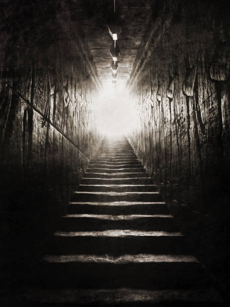

MEMENTO MORI
The Tunnels
Your steps bang loudly against the steps and halls through the crypt, and so to do theirs. Your breathe and pace so quick as you descend. But the beasts are getting louder, and your body can't keep up.
You zoom past the steps ahead of you, desperately panting as the stifling air never ends. Their claws scratching against the stone behing you.
Keep Running
